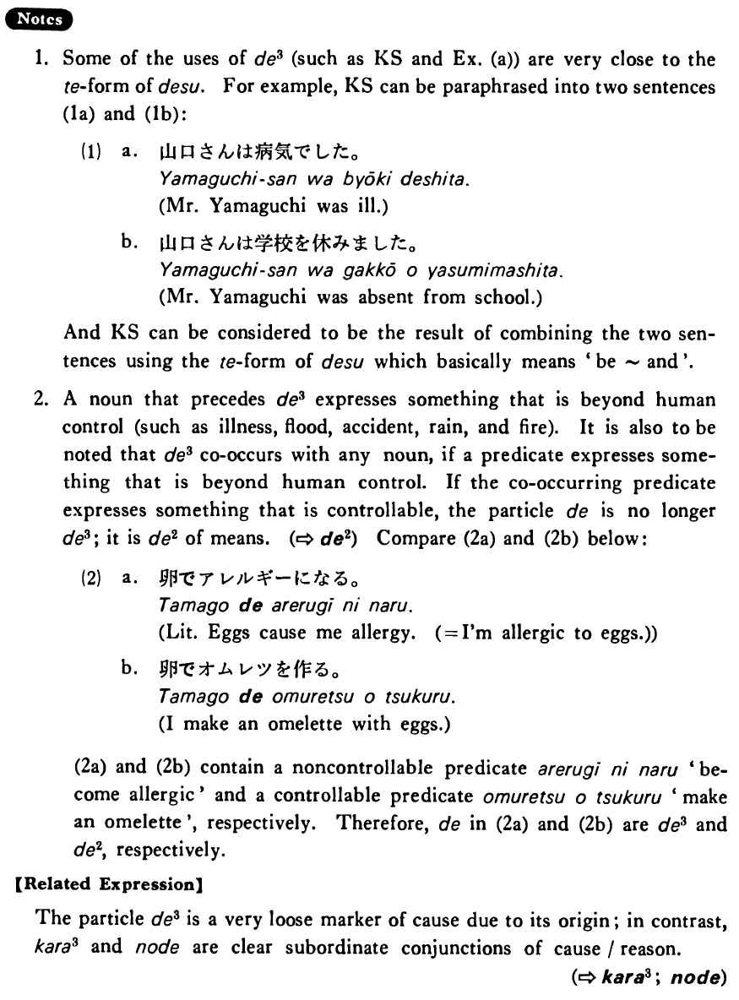

で (3) (B. 107)
- (ks).
- 山口さんは病気で学校を休んだ・休みました。
- Because Mr. Yamaguchi was ill, he didn't come to school.
- (a).
- 明日は期末試験で大変です。
- I'm having an awful time because of tomorrow's final exam.
- (b).
- 大雨で橋が壊れた。
- Heavy rain destroyed the bridge.
- (c).
- 昨日は夜、仕事でとても疲れた。
- Because of my work I got very tired last night.
- (d).
- 父は交通事故で入院しました。
- My father was hospitalised due to a traffic accident.
